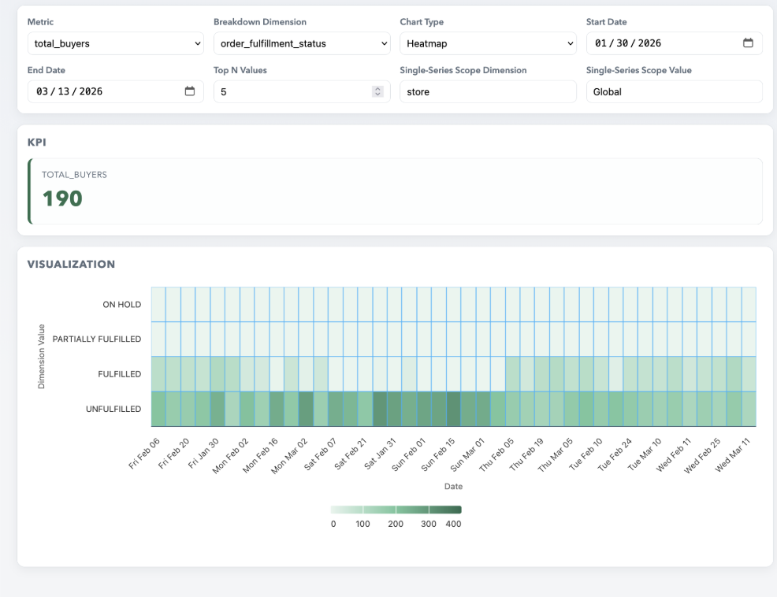

As a Co-Project Manager alongside Himansi, I helped lead the development of a data visualization layer that translated raw system metrics into structured, interactive dashboards. The system enabled teams to monitor performance, identify anomalies, and explore data through dynamic filtering and drill-downs.
My Role
- Co-Project Manager coordinating technical and business requirements
- Defined KPI structures and dashboard metrics
- Led development of the visualization layer and system architecture
Technical Work
- Designed and built 5+ KPI dashboards with interactive filtering
- Implemented a semantic query layer for flexible data exploration
- Integrated time-series anomaly detection using Prophet
- Developed backend APIs to support data retrieval and aggregation
Impact
- Enabled faster identification of anomalies across system metrics
- Improved clarity and interpretability of complex datasets
- Structured raw data into meaningful, decision-ready insights
Project Preview
